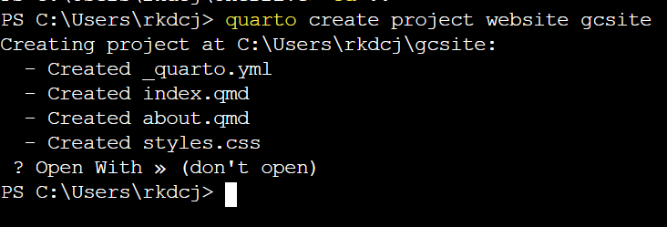
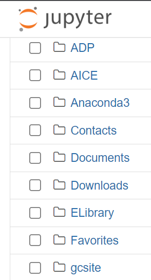
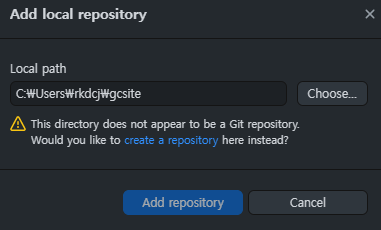
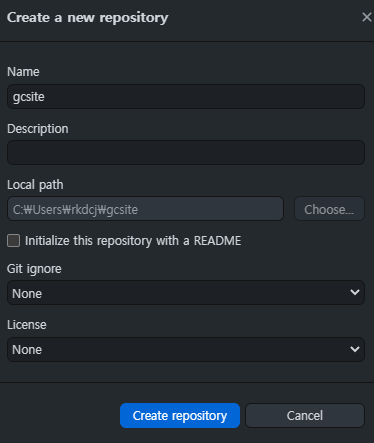
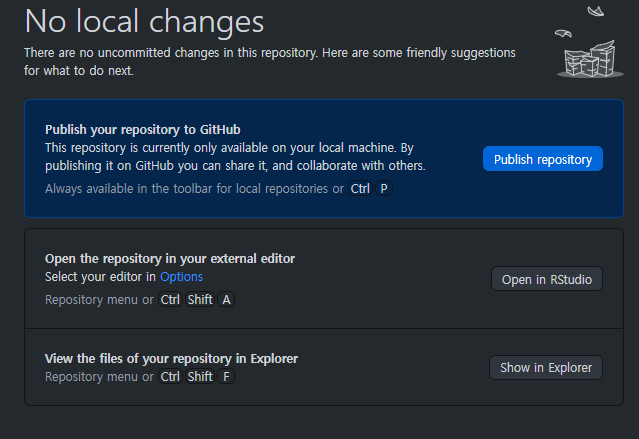
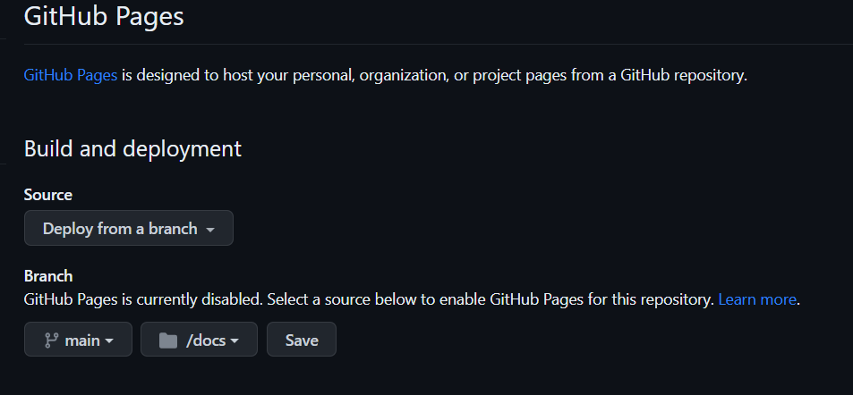
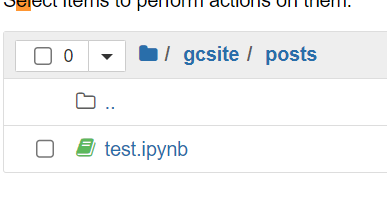
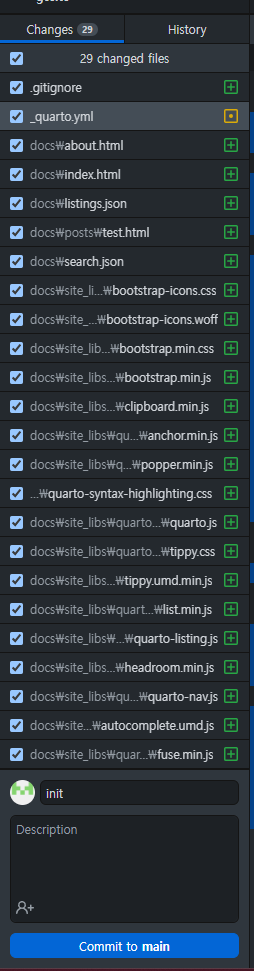
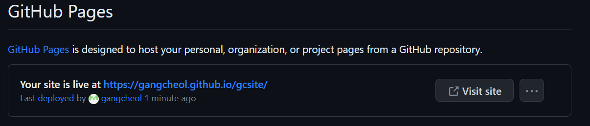

1. Quarto
- 어… 일단 평소에도 quarto를 이용해서 웹사이트를 관리했지만… 뭔가 처음 깃허브를 접하구 하시는 분들은 이 플랫폼을 사용할 때 되게 난항이 있을것 같다… (내가 그랬다…)
- 그리고 원래 만들어 놓았던 사이트는 뭔가 좀 지저분한 느낌이 들어서….
- 에이블스쿨 하면서 배운것들 기록할 때는 뭔가 깔끔한 공간에 하고 싶기도 하다.
- 이참에 절차를 확실히 내가 적어두자!
(1) install
- quarto download link : 여기서 quarto를 다운받자!
(2) website 생성
- Terminal을 켠다음에 아래와 같은 명령어를 입력한다!
(그.. 명령어 입력할 때 현재 자기 주피터 킬때 켜지는 폴더로 옮긴 다음에 수행하자… 골치 아프다ㅜㅜ)
quarto create project website gcsite
- 그러면 다음과 같은 이미지가 보인다

- 저기 open with 어찌고 보이는데 d버튼 누르면 (don’t open)으로 넘어가니 그걸 선택한 후 엔터를 눌러준다!
- 그러면 아래 이미지처럼 맨 밑에 gcsite라는 폴더가 생긴 것을 볼 수 있다.

(3) 깃허브 & 로컬 연결
- git bash 쓰는 사람들 많던데 난 github desktop이 훨씬 편하다.
- git 알못이기 때문에 많은 것을 알기 위해 괴롭고 싶지 않다.
- 뭐 여튼 깃허브 데스크탑을 킨다.
- 상단 메뉴바 \(\to\) File \(\to\) Add local repository
- 그러면 아래와 같은 경고문이 뜬다.

- local하고 연결하고 싶은데 깃허브에는 gcsite가 없으니 대충 만들어 달라는 것임 “create a repository” 를 눌러주자.

- 무시, 걍 create repository ㄱㄱ
- 그러면 깃허브 데스크탑에서 너 방금 만든거 너꺼 깃허브에 Publish 할거냐고 물어봄

- Publish repository 눌러주면 끝~~ (단, publish할 때 private 체크박스는 해제하구 하자!)
- 그 다음 내가 생성산 gcsite 저장소 setting으로 넘어가서 pages를 클릭!
- 아래와 같이 branch를 수정 후 save 버튼 눌러주자

(4) 문서 생성
- quarto 원리 : 작성한 ipynb파일 html파일로 출력해서 그 html파일들로 웹사이트를 구성하는 것1
- step1. posts와 docs라는 폴더를 만들자
- posts는 내가 작성하는 ipynb파일들이 들어갈거고, docs에는 html파일이 들어갈 것이다.
- step2. index 파일 수정
- index파일은 뭐랄까 네비게이터 역할이랄까 아래와 같이 바꿔주자
---
title: "GC site"
listing:
contents: posts
sort: [date desc, title]
type: table
categories: true
sort-ui: true
filter-ui: true
page-layout: full
title-block-banner: true
---- step3. _quarto.uml 파일 수정 \(\to\) 템플릿이랑 디자인 이쁜거 많으니 본인 입맛에 맞게 수정하면 됩니당
project:
type: website
output-dir : docs
website:
title: "GC site"
page-navigation: true
navbar:
right:
- icon : github
href : https://github.com/gangcheol/
sidebar:
style: "docked"
search: True
contents: auto
format:
html:
css: styles.css
toc: true
code-fold : False
code-line-numbers : True
code-copy : True
theme :
light : flatly
editor : visual- step4. 앞서 만든 posts폴더에 아무 파일이나 만들어보자

- step5. 그 후 다시 터미널에서 내가 생성한 폴더로 이동
필자의 경우는 cd gcsite
- step6. quarto render 입력
- step7. github desktop보면 난리가 났을 것이다. 막 일을 좀 많이 했음.
- 로컬하고 연결되어 있으니 로컬이 하고 있는 걸 다적어서 그럼

저기 내가 밑에 이러한 기록을 init이라고 써놨다. 저건 내가 로컬에서 한 행동을 내 깃허브 로컬에 저장할 건데, 그 행동을 init이라고 쓴거
이제 저 Commit to main 버튼을 눌러주고 가운데 화면에 뜨는 push origin을 눌러주자!
- 마지막!! 아까 깃허브 로컬 셋팅에서 pases란에 잠시 후에 들어가보면 다음과 같은 것을 볼 수 있다.

- 저 링크로 들어가면 내가 만든 웹사이트 초안을 볼 수 있다.
- 링크